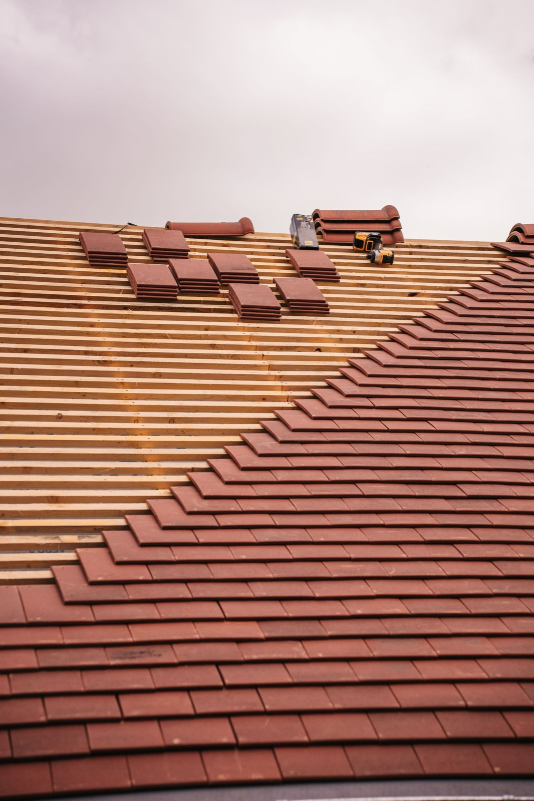
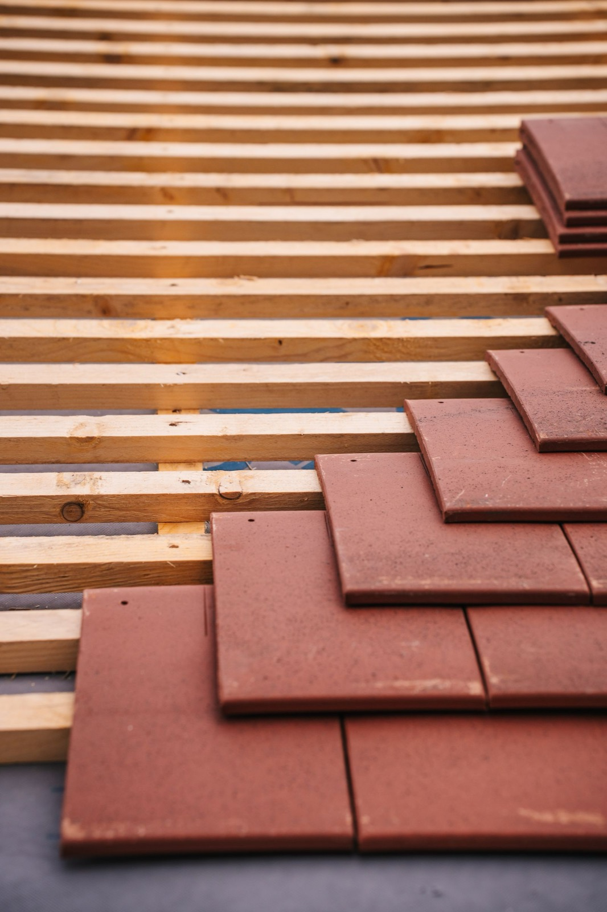
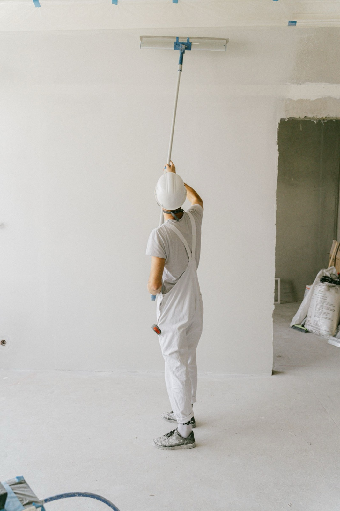
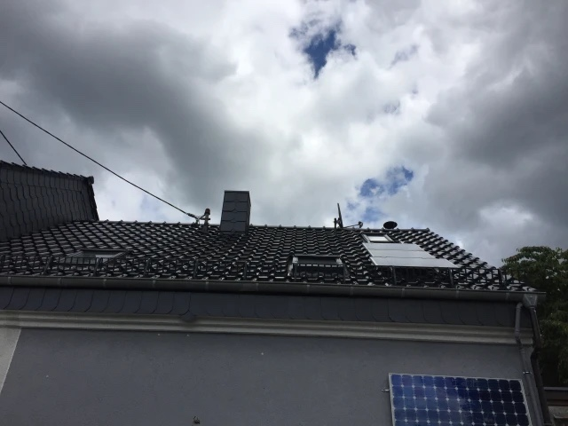
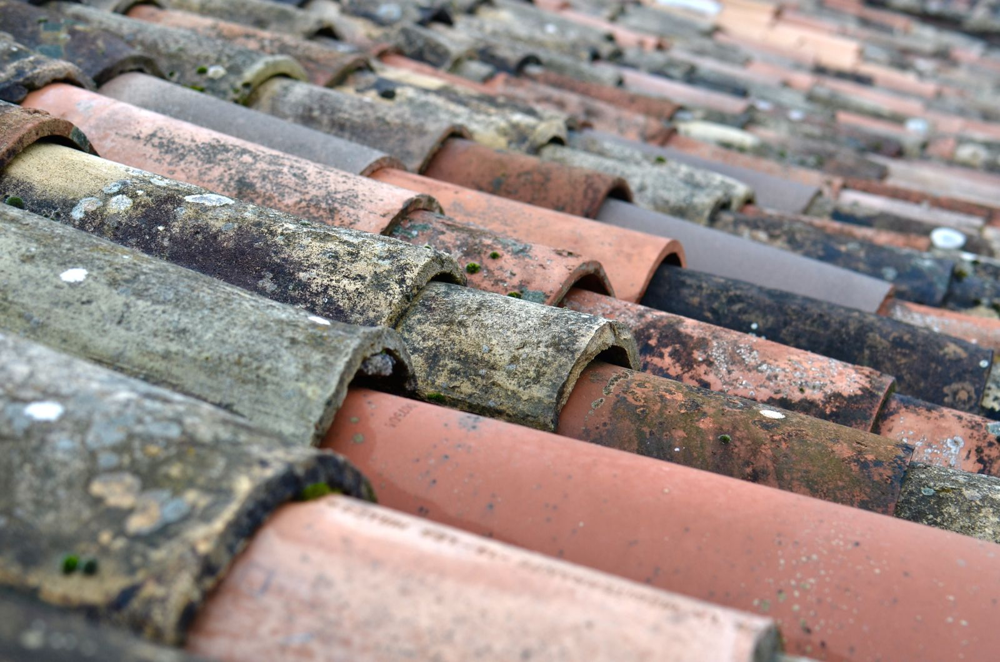
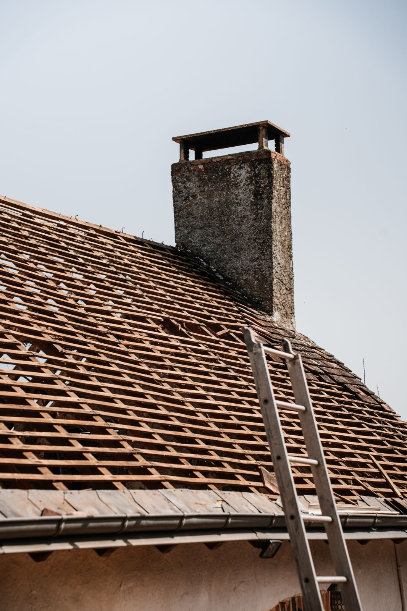
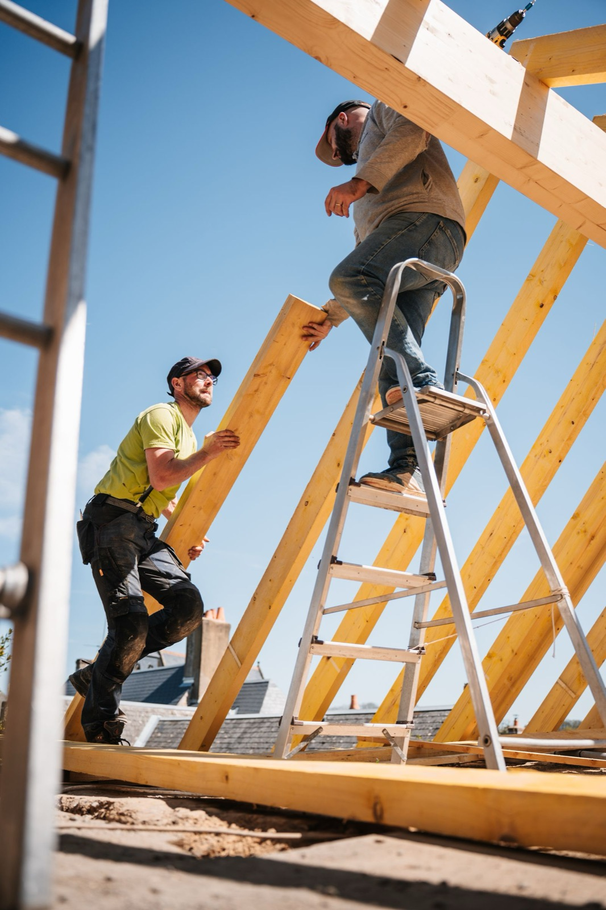
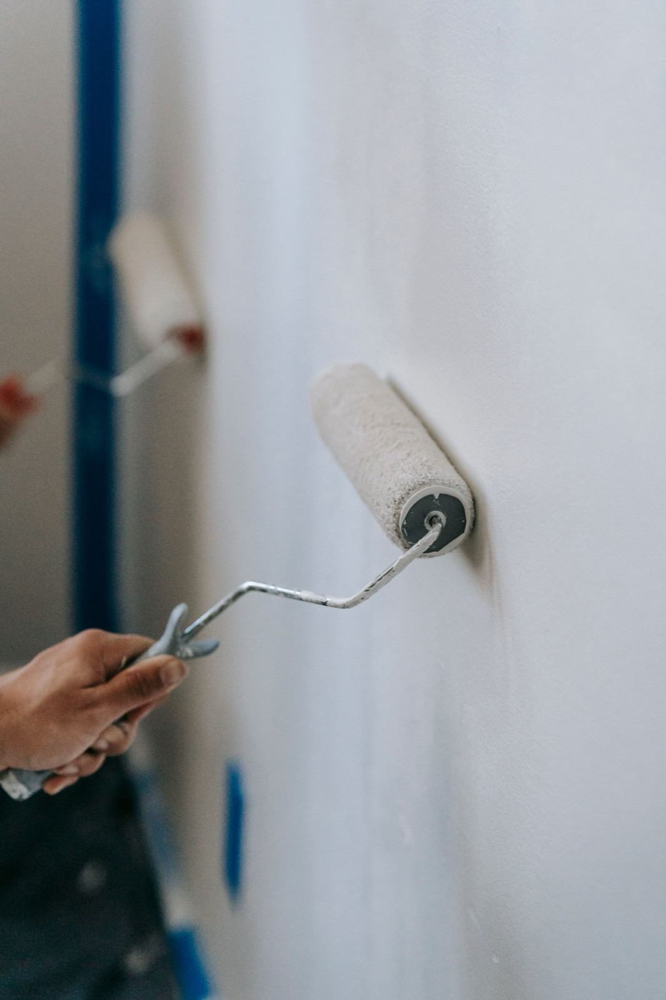

Steildach & Sanierung
Neueindeckung und Sanierung von Steildächern – auch im Altbau, von der Bestandsaufnahme bis zum fertigen Dach.

Dachdecker & Maler · Dudweiler
Dachdeckerei und Malerbetrieb in Saarbrücken-Dudweiler – rund 14 Mitarbeitende, Dach und Maler, ein Ansprechpartner.
Zwei Gewerke unter einem Dach
Dach und Fassade gehören zusammen. Bei uns arbeiten Dachdecker und Maler aus einem Haus – damit Sie nicht zwei Firmen koordinieren müssen.

Steildach, Flachdach, Dachsanierung, Gauben, Dämmung, Sturmschäden und Asbestsanierung.
Leistungen Dach
Malerarbeiten innen und außen, Fassaden und Verputzen, Tapezieren, Bodenbeläge, Schimmel- und Wasserschadensanierung.
Leistungen MalerLeistungen
Vom kleinen Reparaturdienst nach dem Sturm bis zur kompletten Sanierung – für Privatkunden und Gewerbe.
Neueindeckung und Sanierung von Steildächern – auch im Altbau, von der Bestandsaufnahme bis zum fertigen Dach.
Abdichtung und Sanierung von Flachdächern – damit es oben dauerhaft dicht bleibt.
Dachausbau, Gauben und Dachfenster – mehr Raum und Licht unter dem Dach.
Dachdämmung, Innendämmung und Wärmedämmung – weniger Energieverbrauch, mehr Wohnkomfort.
Sturmschäden beseitigen, Dächer reparieren – schnelle Hilfe, wenn das Dach Schaden genommen hat.
Fachgerechter Asbestabbau und Asbestsanierung an Dach und Fassade.
Anstriche, Lackierarbeiten und Tapeten innen wie außen – sauber, deckend, farbsicher.
Fassaden- und Verputzarbeiten – die Außenhaut des Hauses schützen und gestalten.
Bodenbeläge und Naturstein verlegen – robuste Böden für innen und außen.
Ursache finden, Befall und Schäden beseitigen, Flächen instand setzen – vom Dach bis zur Wand.
Projekte & Arbeit

Ein Wohnhausdach aus dem Betrieb: dunkle Eindeckung, Dachflächenfenster, Kamineinfassung und Solarmodule auf der Dachfläche – ein typisches Dachdecker-Projekt in Saarbrücken und Umgebung.




Symbolfotos – das Projektfoto oben stammt aus dem Betrieb.
Über uns
Gebrüder Schein ist ein inhabergeführter Dachdecker- und Malerbetrieb in Saarbrücken-Dudweiler. Wir vereinen Dachdeckerei sowie Maler- und Lackiererarbeiten unter einem Dach – mit rund 14 Mitarbeitenden, die Dächer eindecken, abdichten, dämmen, verputzen und streichen.
Wir arbeiten für private Bauherren genauso wie für Gewerbekunden – von der Eindeckung über die Dämmung bis zu Fassade und Innenanstrich. Ein Betrieb, ein Ansprechpartner, kurze Wege.
Kontakt
Ob Sturmschaden, neue Eindeckung oder frischer Anstrich: Ein Anruf genügt, Termine vor Ort nach Vereinbarung.
Erreichen Sie uns telefonisch gerade nicht, schreiben Sie eine E-Mail – wir melden uns zurück.